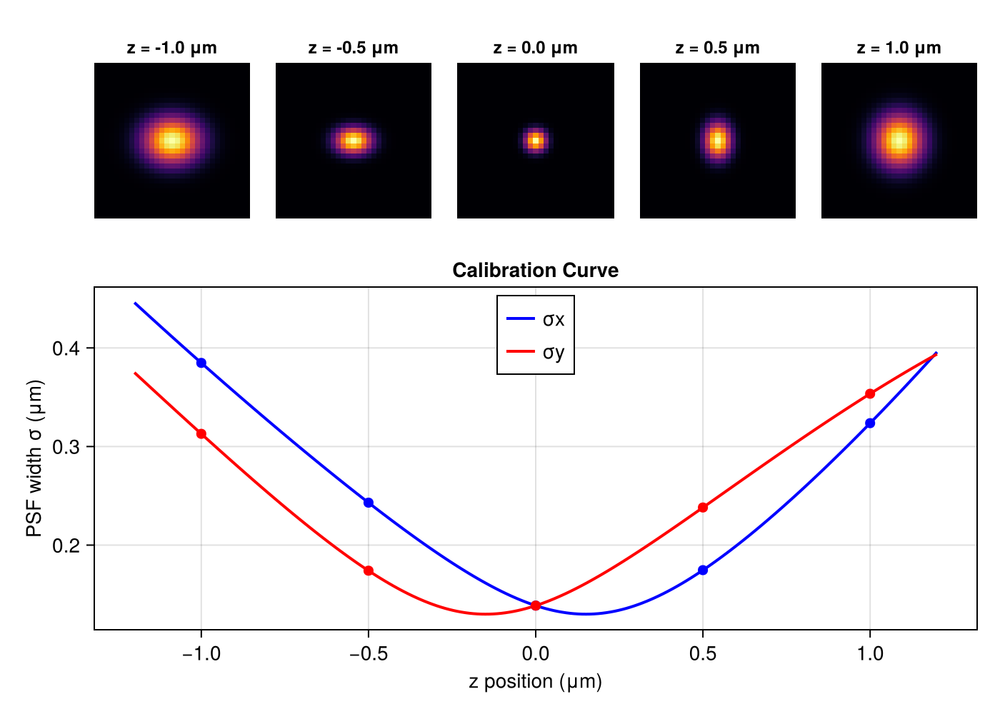

3D Astigmatic Fitting
This example demonstrates 3D localization using the AstigmaticXYZNB model, which uses a cylindrical lens to encode z-position in the ellipticity of the PSF.
Theory
Astigmatic PSF Model
A cylindrical lens introduces astigmatism, causing the PSF to have different focal planes for the x and y directions. The PSF widths vary with z according to:
\[\sigma_x(z) = \sigma_{x0} \sqrt{\alpha_x(z)} \quad \text{where} \quad \alpha_x(z) = 1 + \left(\frac{z-\gamma}{d}\right)^2 + A_x\left(\frac{z-\gamma}{d}\right)^3 + B_x\left(\frac{z-\gamma}{d}\right)^4\]
\[\sigma_y(z) = \sigma_{y0} \sqrt{\alpha_y(z)} \quad \text{where} \quad \alpha_y(z) = 1 + \left(\frac{z+\gamma}{d}\right)^2 + A_y\left(\frac{z+\gamma}{d}\right)^3 + B_y\left(\frac{z+\gamma}{d}\right)^4\]
The key insight: at z=0, both widths are at their minimum. Moving in +z causes σx to increase while σy stays narrow (and vice versa for -z). The fitter uses this ellipticity to determine z.
Parameter Meanings
| Parameter | Description | Typical Values |
|---|---|---|
σx₀, σy₀ | In-focus PSF widths | 0.10-0.15 μm |
γ | Half-distance between x and y focal planes | 0.1-0.3 μm |
d | Depth-of-field parameter (scales z dependence) | 0.3-0.6 μm |
Ax, Ay | Cubic correction coefficients | -0.1 to 0.1 |
Bx, By | Quartic correction coefficients | -0.05 to 0.05 |
The focal plane offset γ determines the separation between the two astigmatic foci. Larger γ gives better z-resolution but reduces the usable z-range.
PSF Calibration Curve and Shape
The following shows how σx and σy vary with z, along with PSF images at different z positions:
using CairoMakie
# Astigmatic PSF parameters (typical values)
σx₀, σy₀ = 0.13, 0.13 # in-focus widths (μm)
Ax, Ay = 0.05, -0.05 # cubic coefficients
Bx, By = 0.01, -0.01 # quartic coefficients
γ = 0.15 # focal plane offset (μm)
d = 0.4 # depth scale (μm)
# Compute sigma at given z
function compute_sigma(z)
α_x = 1 + ((z - γ)/d)^2 + Ax*((z - γ)/d)^3 + Bx*((z - γ)/d)^4
α_y = 1 + ((z + γ)/d)^2 + Ay*((z + γ)/d)^3 + By*((z + γ)/d)^4
return σx₀ * sqrt(α_x), σy₀ * sqrt(α_y)
end
# Generate PSF image at given z
function make_psf_image(z; imgsize=31, pixel=0.1)
img = zeros(Float32, imgsize, imgsize)
center = (imgsize + 1) / 2
sx, sy = compute_sigma(z)
sx_pix, sy_pix = sx / pixel, sy / pixel
for j in 1:imgsize, i in 1:imgsize
x, y = j - center, i - center
img[i,j] = exp(-x^2/(2sx_pix^2) - y^2/(2sy_pix^2))
end
return img
end
# Create combined figure
fig = Figure(size=(700, 500))
# Top row: PSF images at different z
z_positions = [-1.0, -0.5, 0.0, 0.5, 1.0]
for (idx, z) in enumerate(z_positions)
ax = Axis(fig[1, idx], title="z = $z μm", aspect=1,
titlesize=12, yreversed=true)
hidedecorations!(ax)
hidespines!(ax)
img = make_psf_image(z)
heatmap!(ax, img', colormap=:inferno) # transpose for proper x/y orientation
end
# Bottom: sigma vs z curve
ax_curve = Axis(fig[2, 1:5],
xlabel="z position (μm)",
ylabel="PSF width σ (μm)",
title="Calibration Curve"
)
z_range = range(-1.2, 1.2, length=200)
sigmas = [compute_sigma(z) for z in z_range]
σx_vals = [s[1] for s in sigmas]
σy_vals = [s[2] for s in sigmas]
lines!(ax_curve, collect(z_range), σx_vals, label="σx", linewidth=2, color=:blue)
lines!(ax_curve, collect(z_range), σy_vals, label="σy", linewidth=2, color=:red)
# Mark the z positions shown in images
for z in z_positions
sx, sy = compute_sigma(z)
scatter!(ax_curve, [z], [sx], color=:blue, markersize=10)
scatter!(ax_curve, [z], [sy], color=:red, markersize=10)
end
axislegend(ax_curve, position=:ct)
rowsize!(fig.layout, 1, Relative(0.35))
fig
At z < 0, the PSF is elongated vertically (σy > σx). At z > 0, it's elongated horizontally (σx > σy). The crossing point near z=0 is where the PSF is most circular. The fitter uses this ellipticity to determine z position.
Basic 3D Fitting
using GaussMLE
using Statistics
# Camera and PSF setup
camera = IdealCamera(0:1023, 0:1023, 0.1) # 100nm pixels
psf = AstigmaticXYZNB{Float32}(
0.13f0, 0.13f0, # σx₀, σy₀
0.05f0, -0.05f0, # Ax, Ay
0.01f0, -0.01f0, # Bx, By
0.15f0, 0.4f0 # γ, d
)
# Generate test data
batch = generate_roi_batch(camera, psf, n_rois=500, roi_size=13)
# Fit
fitter = GaussMLEConfig(psf_model=psf, iterations=30)
smld, info = fit(batch, fitter)
# Access 3D positions (Emitter3DFitGaussMLE type)
x_pos = [e.x for e in smld.emitters]
y_pos = [e.y for e in smld.emitters]
z_pos = [e.z for e in smld.emitters]
println("Fitted $(length(smld.emitters)) localizations")
println("Z range: $(round(minimum(z_pos), digits=3)) to $(round(maximum(z_pos), digits=3)) μm")
println("Mean z precision: $(round(mean([e.σ_z for e in smld.emitters])*1000, digits=1)) nm")Output: Emitter3DFit
The AstigmaticXYZNB model returns Emitter3DFitGaussMLE emitters with:
| Field | Description | Units |
|---|---|---|
x, y, z | 3D position | microns |
photons | Total photon count | photons |
bg | Background level | photons/pixel |
σ_x, σ_y, σ_z | Position uncertainties (CRLB) | microns |
σ_xy, σ_xz, σ_yz | Position covariances (off-diagonal of Fisher matrix inverse) | microns² |
σ_photons, σ_bg | Photometry uncertainties | photons |
pvalue | Goodness-of-fit p-value (χ² test) | 0-1 |
Quality Filtering
Filter 3D localizations by precision:
using GaussMLE
# Fit data
fitter = GaussMLEConfig(psf_model=psf, iterations=30)
smld, info = fit(batch, fitter)
# Filter by z precision (typically worse than xy)
good_z = @filter(smld, σ_z < 0.050) # z precision < 50nm
# Combined precision filter
precise = @filter(smld, σ_x < 0.020 && σ_y < 0.020 && σ_z < 0.040)
println("Kept $(length(precise.emitters))/$(length(smld.emitters)) with good 3D precision")Calibration Tips
Obtaining Calibration Parameters
The astigmatic PSF parameters (σx₀, σy₀, Ax, Ay, Bx, By, γ, d) are typically determined by:
- Bead calibration: Image fluorescent beads at known z positions
- Fit widths: Measure σx and σy at each z (using
GaussianXYNBSXSYmodel) - Curve fitting: Fit the polynomial model to extract parameters
Typical Values by Setup
| Setup | γ (μm) | d (μm) | Notes |
|---|---|---|---|
| Weak astigmatism | 0.1-0.15 | 0.4-0.5 | ~1 μm z-range |
| Standard | 0.15-0.25 | 0.35-0.45 | ~0.8 μm z-range |
| Strong astigmatism | 0.25-0.35 | 0.3-0.4 | ~0.6 μm z-range |
Stronger astigmatism (larger γ) improves z precision but reduces the usable z range.
Z Localization Precision
Z precision depends on photon count and PSF parameters:
using GaussMLE
using Statistics
camera = IdealCamera(0:1023, 0:1023, 0.1)
psf = AstigmaticXYZNB{Float32}(
0.13f0, 0.13f0, 0.05f0, -0.05f0, 0.01f0, -0.01f0, 0.15f0, 0.4f0
)
# Compare precision at different z positions
fitter = GaussMLEConfig(psf_model=psf, iterations=30)
for target_z in [-0.3, 0.0, 0.3]
batch = generate_roi_batch(camera, psf, n_rois=200, roi_size=13)
smld, info = fit(batch, fitter)
σ_xy = mean([sqrt(e.σ_x^2 + e.σ_y^2)/sqrt(2) for e in smld.emitters])
σ_z = mean([e.σ_z for e in smld.emitters])
println("Mean xy precision: $(round(σ_xy*1000, digits=1)) nm")
println("Mean z precision: $(round(σ_z*1000, digits=1)) nm")
endZ precision is typically 2-3x worse than xy precision for astigmatic fitting.
Next Steps
- See Models for comparison with 2D models
- Learn about GPU Support for fitting large 3D datasets
- Check the API Reference for all
AstigmaticXYZNBoptions